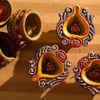

7 gorgeous pictures from Rajasthan that will make you fall in love with the state!
These pictures of Indian heritage sites will amaze you beyond words!
Stunning photos from Northeast India to make you a travel addict
Autumn goals: Places you should not miss visiting when it’s autumn in India
The pictures say it all - 9 tempting thali meals from the states of India

Diwali shopping in Delhi can be fun, if you know where to go
Tomb of legendary lovers Heer and Ranjha
Haunted Indian roads that you should avoid!
A day-trip to mesmerising Sonmarg in Kashmir
A walk through Kolkata’s colonial past